Example gallery#
This section demonstrates some of the basic functionality of systole.
Artefacts#
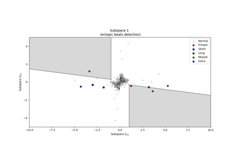
Outliers and artefacts detection
Outliers and artefacts detection
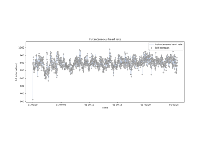
Detecting and correcting artefacts in peaks vector
Detecting and correcting artefacts in peaks vector
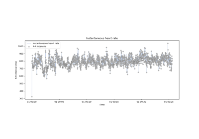
Detecting and correcting artefacts in RR time series
Detecting and correcting artefacts in RR time series
Plotting#
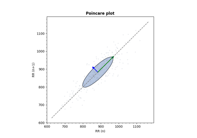
Plot pointcare
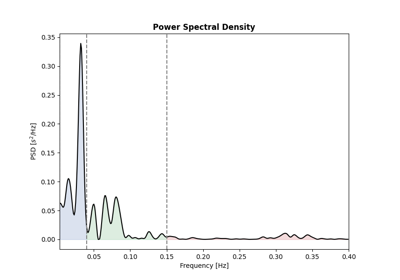
Plot frequency
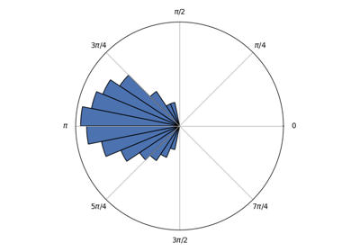
Plot circular
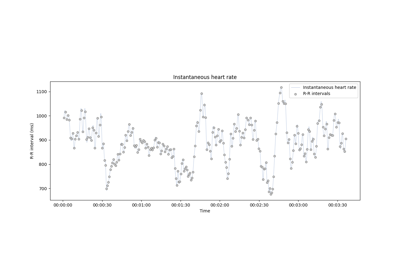
Plot instantaneous heart rate
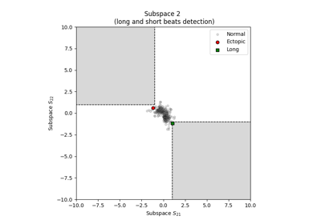
Plot short and long invertvals
Plot short and long invertvals
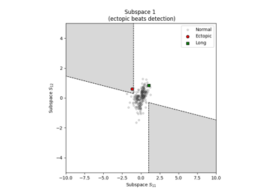
Plot ectopic beats
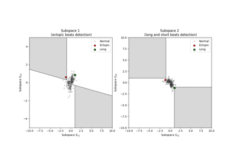
Plot subspaces to vivualize short/long and ectopic beats
Plot subspaces to vivualize short/long and ectopic beats
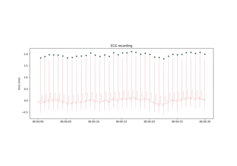
Plot raw physiological signal
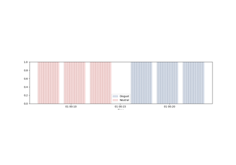
Plot events
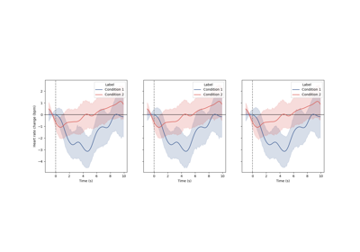
Plot evoked
Recording#
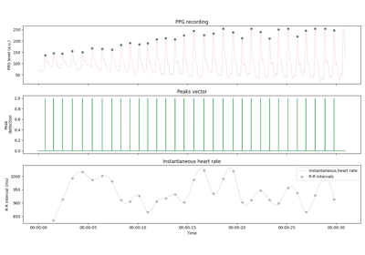
Instantaneous Heart Rate
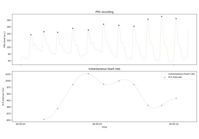
Recording PPG signal
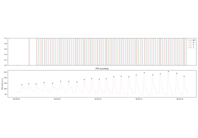
Heartbeat Evoked Arpeggios (cardiac-contingent stimuli)
Heartbeat Evoked Arpeggios (cardiac-contingent stimuli)